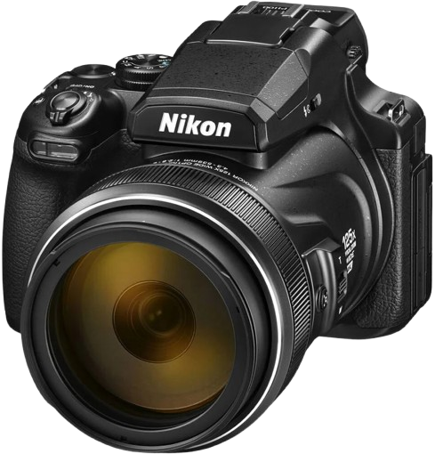

Extreme zoom range
The Nikon P1100 offers an impressive 125x optical zoom, making it ideal for birdwatching, wildlife, and distant subjects that would otherwise be hard to reach.
Superzoom Camera
A powerful bridge camera built for extraordinary reach, wildlife photography, and distant landscapes with a massive zoom range and easy handling.

The Nikon P1100 offers an impressive 125x optical zoom, making it ideal for birdwatching, wildlife, and distant subjects that would otherwise be hard to reach.
Its compact bridge-camera design gives you a huge zoom range without needing to swap lenses, making it convenient for travel and outdoor shooting.
The P1100 is simple to operate, with intuitive controls and a comfortable grip that makes long shooting sessions pleasant and practical.